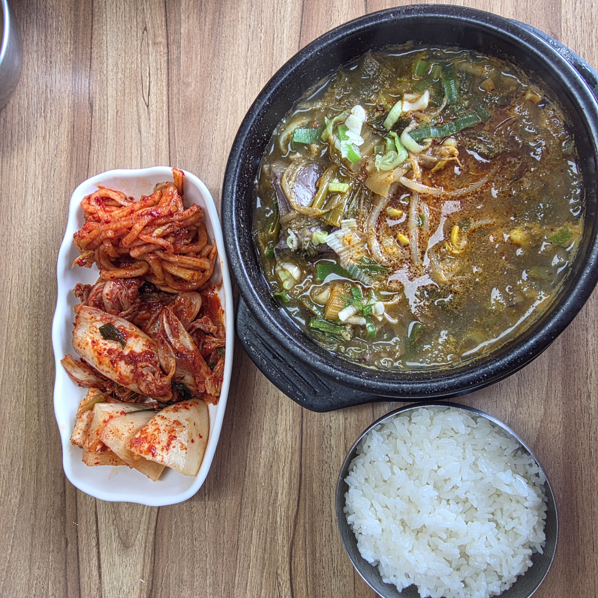
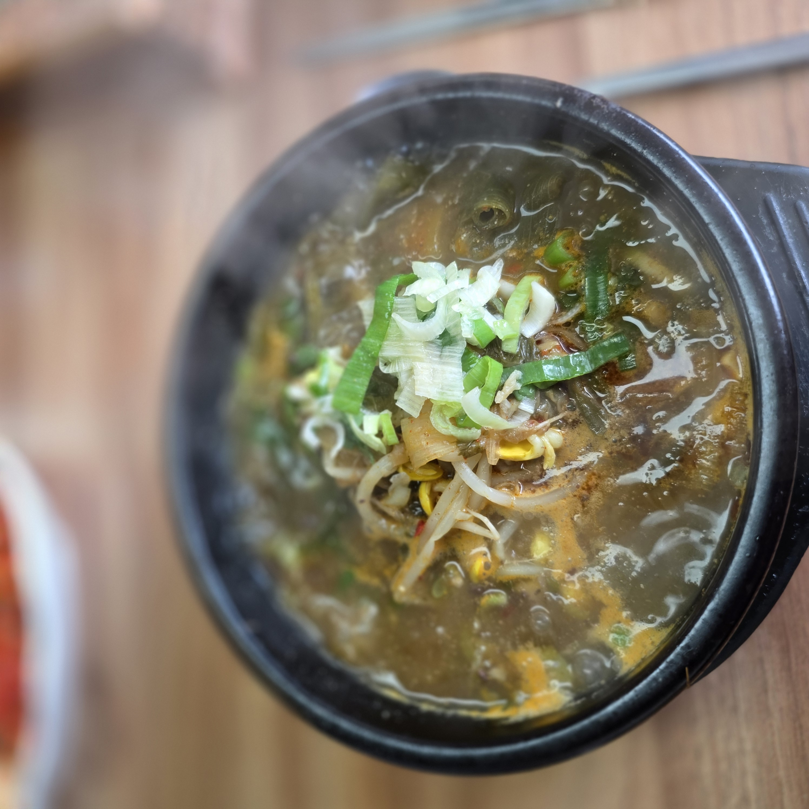
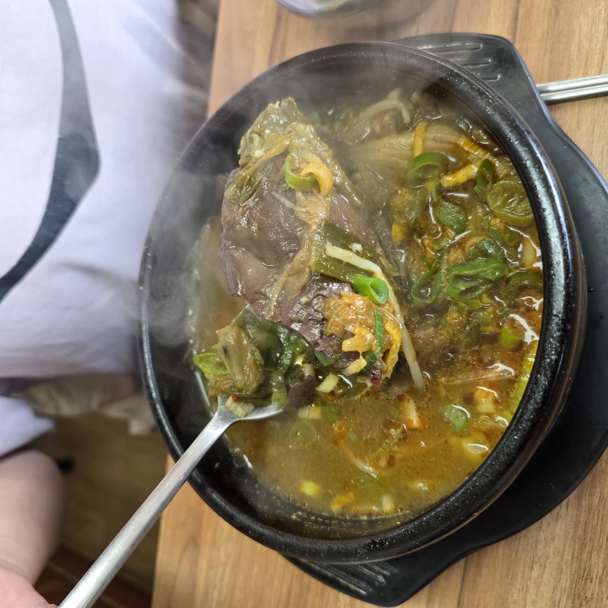
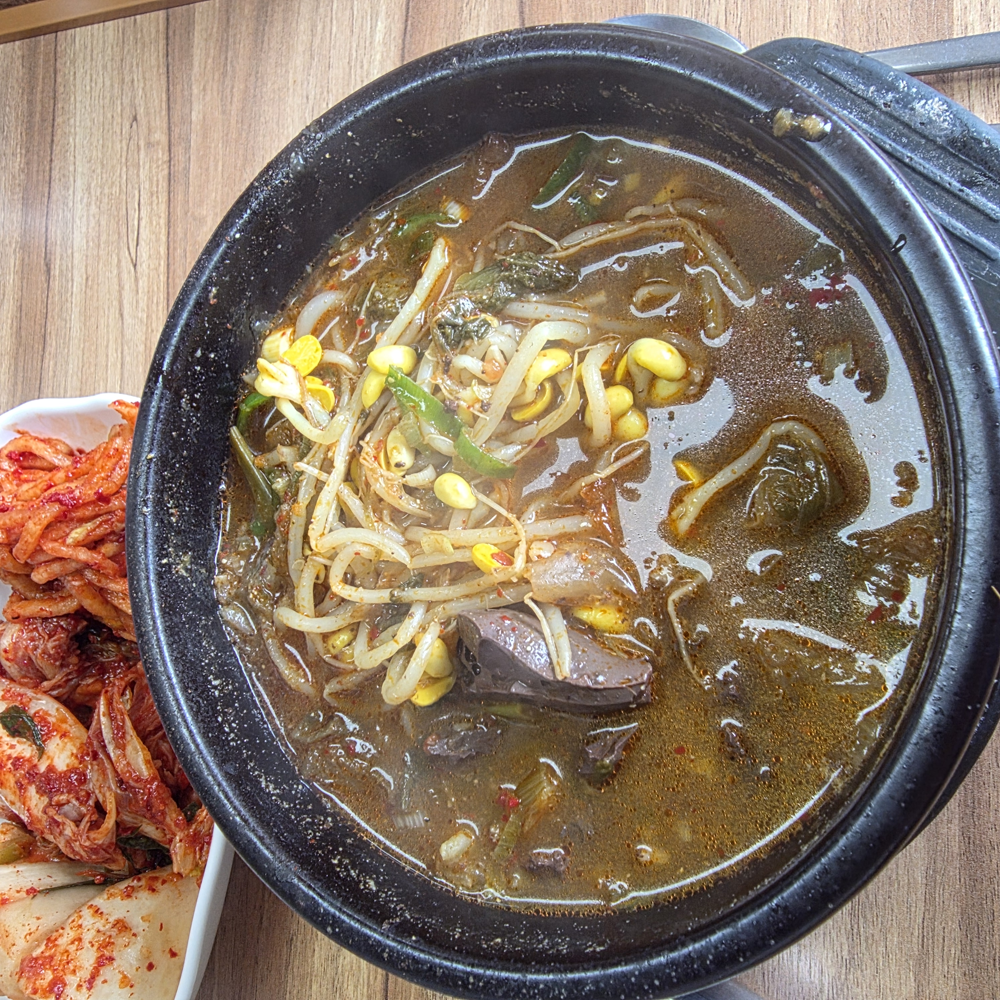
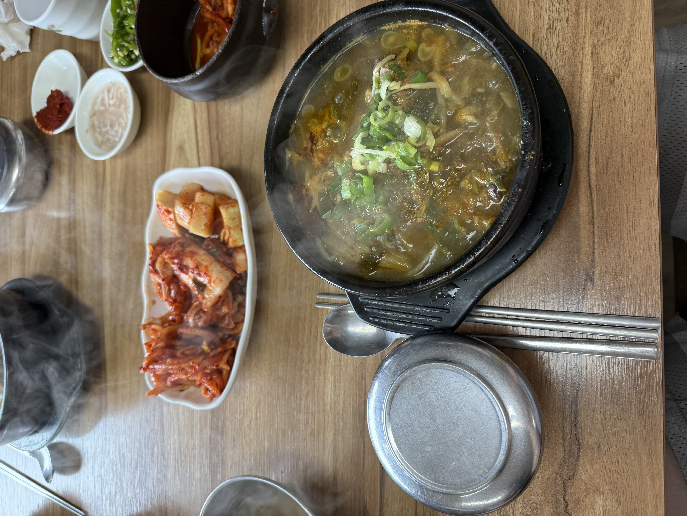
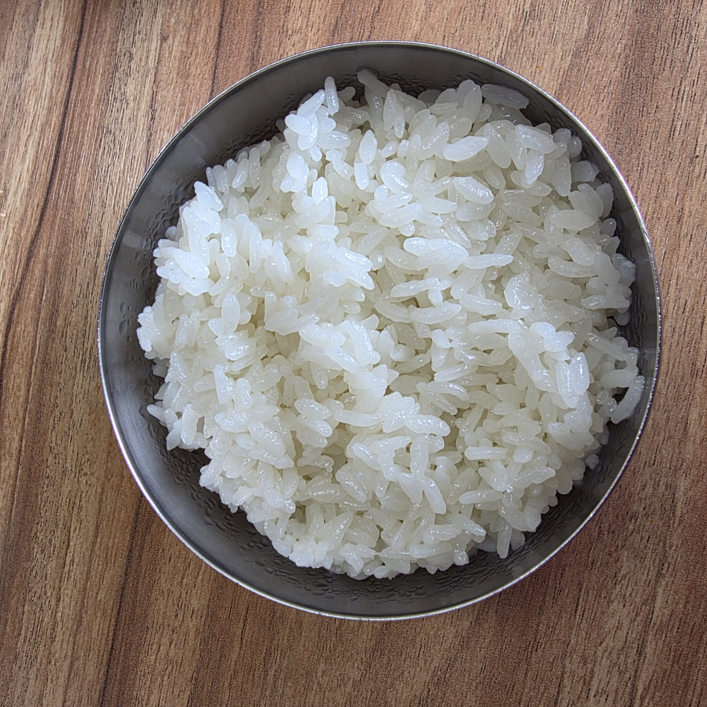
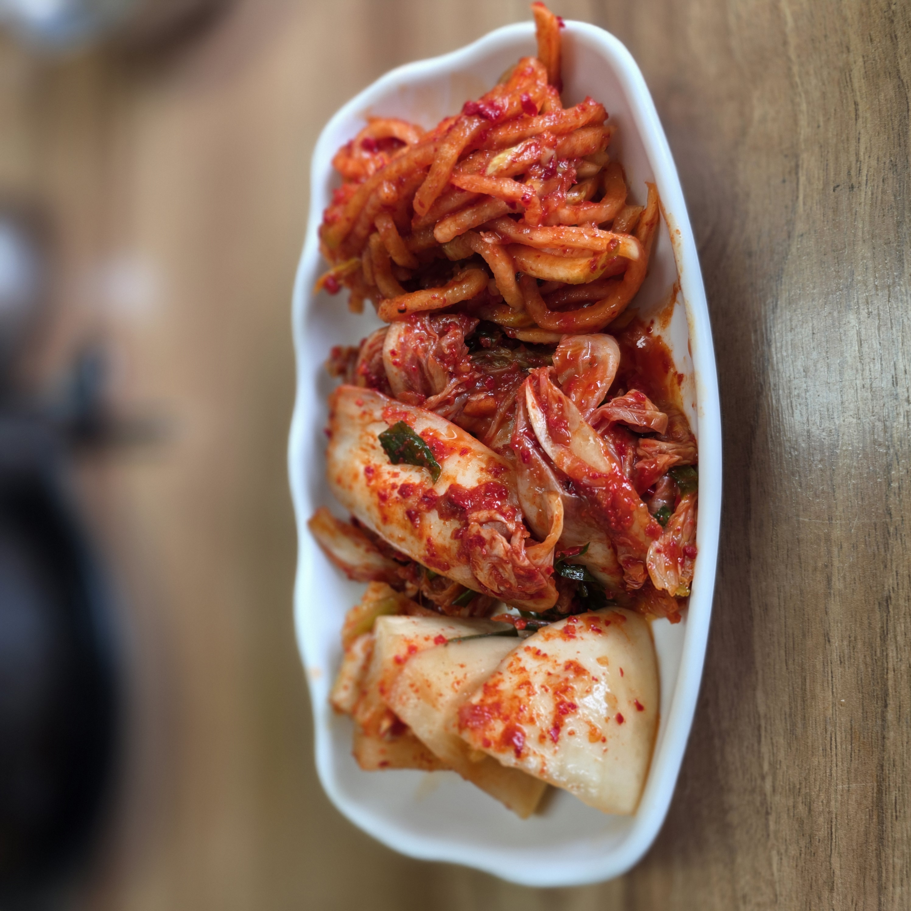
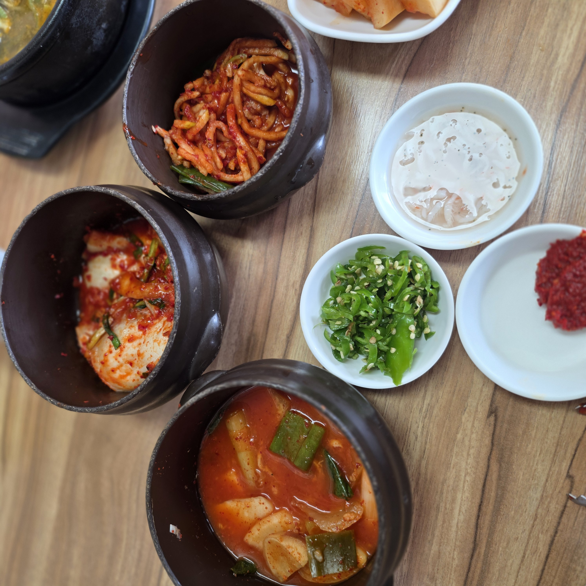

순대와 고기가 넉넉한 순대국 – 부추 듬뿍, 뽀얗고 깔끔한 국물이 담백하다
이른 아침에 속을 뜨끈하게 풀어줄 해장국 한 그릇이 간절할 때가 있습니다. 김포에 살면서 그런 날 제가 차를 몰고 향하는 곳이 강화 새벽해장국이에요. 김포에서 강화대교만 건너면 닿는 강화읍에 있고, 상호 그대로 새벽 5시부터 문을 여는 노포 해장국집입니다. 저는 여기서 선지우거지해장국을 제일 좋아하는데, 얼큰하고 구수한 국물에 강화섬쌀로 지은 밥을 말면 아침 한 끼가 든든하게 채워져요. 이 글에는 제가 실제로 먹어본 그대로의 후기와 함께, 처음 가는 분이 궁금할 찾아가는 길·주차·영업시간·뭘 시켜야 하는지·메뉴 비교·솔직한 참고점·자주 묻는 질문까지 한자리에 정리해 두겠습니다. 강화 나들이나 김포 근처 아침 해장을 고민 중이라면 이 글 하나로 판단이 서도록 써 볼게요.

강화 새벽해장국은 인천 강화군 강화읍 강화대로 320 대로변에 있습니다. 김포 시내에서 강화대교를 건너 강화읍 방향으로 들어오면 어렵지 않게 닿는 거리라, 김포 사람 입장에선 “해장국 한 그릇 먹으러 잠깐 다녀오는” 코스로 부담이 없어요. 대로변에 접해 있어 차로 지나가다 상호가 눈에 들어오는 편이고, 시골 백반집 같은 정겨운 겉모습이라 처음이어도 위화감 없이 문을 열게 됩니다. 안에 들어서면 요란한 인테리어 없이 편하게 밥 한 그릇 뚝딱 하기 좋은 소박한 분위기라, 혼자 아침을 먹으러 가도 눈치 볼 일이 없고 가족끼리 둘러앉기에도 편안합니다.
차로 가는 분께 반가운 점은 매장 앞에 주차 공간이 있다는 겁니다. 대중교통보다 자차로 다녀오기 편한 위치라, 저도 아침 일찍 차를 끌고 갔을 때 주차 걱정 없이 들어갔어요. 다만 정확한 주차 대수나 만차 시간대까지는 제가 확인하지 못했으니, 붐비는 주말 아침이 걱정되면 방문 전 전화로 여유를 확인하시는 걸 권합니다.
영업시간은 매일 새벽 5시부터 저녁 7시까지입니다. 해장국집치고도 오픈이 이른 편이라, 이른 아침 해장이 필요할 때나 부지런히 나서는 강화 나들이 길 아침 식사로 특히 잘 맞아요. 반대로 저녁 7시면 문을 닫으니, 늦은 저녁이나 심야에 찾는 집은 아니라는 점은 미리 알아두시면 좋습니다. 웨이팅이 있는지는 방문 시점에 따라 다를 수 있어 단정하지 않을게요. 붐비는 시간을 피하고 싶다면 아침 일찍 여유 있게 가는 편이 안전합니다.
이 집의 두 기둥은 선지우거지해장국과 순대국입니다. 두 메뉴 모두 대략 1만 원대로, 가격 차이로 고민할 일은 크지 않아요. 그러니 값보다 취향으로 고르시면 됩니다. 제가 매번 손이 가는 건 선지우거지해장국이지만, 함께 간 일행은 순대국을 더 반기기도 했어요.
고르는 기준을 간단히 정리하면 이렇습니다. 얼큰하고 구수하게 속을 확 풀고 싶다면 선지우거지해장국이 정답입니다. 선지가 큼직하게 들어가 해장 본연에 충실해요. 반대로 선지가 익숙하지 않거나 담백·깔끔한 국물을 원한다면 순대국을 권합니다. 뽀얀 국물이라 호불호가 적고 누구나 편하게 먹기 좋거든요. 둘이 가서 하나씩 시켜 나눠 먹으면 이 집을 가장 잘 즐기는 방법이 됩니다.

뚝배기가 펄펄 끓는 채로 나옵니다. 위로는 우거지와 콩나물, 대파가 수북하고, 그 사이로 부드러운 선지가 큼직하게 자리 잡고 있어요. 국물을 한 숟갈 뜨면 얼큰하면서도 텁텁하지 않고 구수한 맛이 확 올라옵니다. 자극적으로 맵기만 한 국물이 아니라, 우거지에서 우러난 구수함이 바탕에 깔려 있어 끝까지 물리지 않아요. 아침에 이 한 숟갈이면 속이 풀린다는 말이 실감 납니다.
선지는 이 해장국의 주인공이라 할 만합니다. 비린내 없이 고소하게 씹히고, 식감이 뻑뻑하지 않고 부드러워서 선지를 즐겨 먹지 않던 사람도 부담이 덜해요. 여기에 콩나물은 아삭하게, 우거지는 부드럽게 씹혀 국물 건더기만으로도 든든합니다. 저는 뚝배기가 조금 식으면 밥을 말아 넣고, 선지와 우거지를 밥술에 얹어 한입씩 떠먹는 걸 제일 좋아해요. 해장으로도, 그냥 아침 한 끼로도 부족함이 없는 구성입니다.
제 나름의 먹는 순서 팁도 하나 남겨둘게요. 처음엔 국물 본연의 얼큰·구수한 맛을 그대로 몇 숟갈 맛보고, 그다음에 선지와 우거지·콩나물 건더기를 밥과 함께 떠먹습니다. 절반쯤 먹었을 때 다대기를 살짝 풀어 칼칼함을 더하면 후반부까지 물리지 않아요. 밥을 통째로 말기보다 반은 국물에 말고 반은 흰밥으로 남겨두면, 국물이 밴 밥과 강화섬쌀 본연의 밥맛을 번갈아 즐길 수 있습니다. 마지막엔 남은 국물에 밥알까지 싹싹 긁어 먹게 되는, 뚝배기 바닥이 보이는 그런 한 끼예요.


선지가 조금 부담스럽다면 순대국이 대안입니다. 판매 메뉴명은 순대국인데, 이름값을 하듯 순대와 고기가 넉넉하게 들어갑니다. 여기에 부추를 듬뿍 올려 향이 산뜻하게 살아 있어요. 국물은 뽀얗고 깔끔한 편이라 선지해장국의 얼큰함과는 결이 다릅니다. 자극이 덜해 어르신이나 아이와 함께여도 무난하게 권할 수 있는 맛이에요.
순대국의 매력은 간을 내 취향대로 맞추는 재미에 있습니다. 뽀얀 국물 그대로 담백하게 먹다가, 새우젓으로 간을 더하고 다대기를 풀면 순식간에 얼큰한 국물로 변해요. 한 그릇 안에서 두 가지 맛을 오갈 수 있는 셈이라, 취향이 갈리는 일행과 가도 각자 입맛에 맞춰 먹기 좋습니다. 여기에도 강화섬쌀 밥을 말면 순대국 특유의 진한 국물이 밥알에 배어 아침부터 속이 든든해져요. 얼큰한 게 부담스러운 아침이라면 오히려 이 담백한 순대국 쪽이 더 반가울 수 있습니다.

이 집을 다시 찾게 되는 숨은 이유가 밥맛입니다. 강화섬쌀로 지은 밥이라 그런지 윤기가 자르르 흐르고 찰기가 좋아요. 뜨거운 국물에 말아도 밥알이 힘없이 풀어지지 않고 살아 있어서, 국밥의 마지막 한 술까지 질척하지 않게 먹을 수 있습니다. 해장국집에서 밥이 이렇게 존재감 있기가 쉽지 않은데, 여기는 밥만 따로 떠먹어도 맛있을 정도예요.
게다가 공기밥은 무료로 더 주고, 식후에는 숭늉까지 서비스로 나옵니다. 국물에 밥을 말아 먹다 모자라면 한 공기 더 청해 든든하게 채우고, 마지막에 구수한 숭늉으로 입가심하면 아침 식사가 깔끔하게 마무리돼요. 별것 아닌 것 같지만, 이렇게 밥과 숭늉으로 이어지는 인심이 노포 백반집을 다시 찾게 만드는 힘이라고 느꼈습니다. 요즘 공기밥 값을 따로 받는 집이 적지 않은 걸 생각하면, 소소하지만 정말 반가운 배려예요.

밑반찬도 하나하나 손이 간 티가 납니다. 직접 담근 배추김치와 깍두기는 적당히 익어 얼큰한 국물과 잘 어울리고, 아삭하게 씹히는 새콤달콤 무채나물은 밥에 슥슥 비벼 먹어도 좋아요. 화려한 반찬 가짓수로 승부하는 집은 아니지만, 국밥 한 그릇을 제대로 받쳐주는 기본기가 확실합니다.
테이블에는 새우젓·다대기·청양고추가 함께 놓입니다. 앞서 말했듯 새우젓으로 짭조름한 간을, 다대기로 얼큰함을, 청양고추로 칼칼함을 각자 더할 수 있어요. 덕분에 같은 국밥이라도 먹는 사람마다 다른 맛으로 완성됩니다. 처음엔 국물 그대로 맛보고, 절반쯤 먹었을 때 다대기를 조금 풀어 분위기를 바꿔보시길 권해요.


이런 분께 자신 있게 권합니다. ① 김포·강화 근처에서 이른 아침 든든한 해장이 필요할 때(새벽 5시 오픈), ② 강화 나들이 길에 아침 식사로 속을 채우고 싶을 때, ③ 얼큰·구수한 국물과 밥맛 좋은 국밥을 좋아할 때, ④ 혼밥이나 가족 식사로 편안한 시골 백반집 분위기를 원할 때. 자차로 움직이는 분에게도 매장 앞 주차가 있어 부담이 적습니다.
솔직하게 참고할 점도 남겨둘게요. ① 선지가 익숙하지 않은 분이라면 선지우거지해장국은 호불호가 갈릴 수 있으니 순대국을 권합니다. ② 저녁 7시에 문을 닫아 늦은 저녁·심야에는 이용할 수 없습니다. ③ 메뉴가 해장국·순대국 중심이라 선택지가 다양한 편은 아니에요(든든한 국밥 한 그릇을 원할 때 맞는 집입니다). ④ 웨이팅·혼잡 정도는 제가 확인하지 못했으니, 붐비는 시간이 걱정되면 방문 전 전화로 확인하시길 권합니다. ⑤ 노포 특성상 가격·메뉴·영업정보가 바뀔 수 있으니 방문 전 최신 정보를 확인하세요.
총평하자면, 강화 새벽해장국은 화려함으로 승부하는 집이 아니라 국물의 기본기와 밥맛, 노포다운 인심으로 만족을 주는 곳이었습니다. 새벽 5시부터 여는 넉넉한 영업, 강화섬쌀로 지은 밥, 무료 공기밥과 숭늉 서비스까지 – 김포에서 강화대교만 건너면 되는 거리라는 점을 생각하면 다시 찾을 이유가 충분하다고 느꼈어요. 다음엔 일행과 선지해장국·순대국을 하나씩 시켜 나눠 먹어볼 생각입니다.
Q. 몇 시부터 몇 시까지 하나요?
매일 새벽 5시부터 저녁 7시까지 영업합니다. 오픈이 이른 편이라 이른 아침 해장이나 나들이 길 아침 식사로 좋고, 저녁 7시면 마감하니 늦은 저녁 방문은 피하세요.
Q. 뭘 시켜야 하나요?
얼큰·구수한 국물을 좋아하면 선지우거지해장국, 담백하고 깔끔한 걸 원하면 순대국을 추천합니다. 둘이 가면 하나씩 시켜 나눠 먹는 것도 좋아요. 두 메뉴 모두 대략 1만 원대입니다.
Q. 김포에서 가까운가요?
네. 강화대교를 건너면 닿는 강화읍 강화대로변이라, 김포에서 부담 없이 다녀올 수 있는 거리입니다.
Q. 주차 되나요?
매장 앞에 주차 공간이 있어 자차로 가기 편합니다. 다만 정확한 주차 대수·만차 시간대는 확인하지 못했으니, 붐비는 주말 아침이 걱정되면 방문 전 전화로 확인하세요.
Q. 밥이나 다른 서비스가 있나요?
밥은 강화섬쌀로 지어 윤기와 찰기가 좋고, 공기밥은 무료로 더 주며 식후 숭늉이 서비스로 나옵니다. 직접 담근 김치·밑반찬도 함께 제공됩니다.
Q. 선지를 못 먹어도 갈 만한가요?
네. 선지가 부담스러우면 순대국을 고르면 됩니다. 뽀얗고 깔끔한 국물이라 선지 없이도 든든하게 한 끼 할 수 있어요.
| 상호 | 강화 새벽해장국 (선지우거지해장국·순대국) |
| 주소 | 인천 강화군 강화읍 강화대로 320 |
| 영업시간 | 매일 05:00 – 19:00 |
| 전화 | 032-934-8882 |
| 대표 메뉴 | 선지우거지해장국 · 순대국 (전 메뉴 대략 1만 원대) |
| 참고 | 강화섬쌀 사용 · 공기밥 무료·숭늉 서비스 · 직접 담근 김치·밑반찬 · 주차 가능 (가격·정보는 방문 시점 기준·변동) |